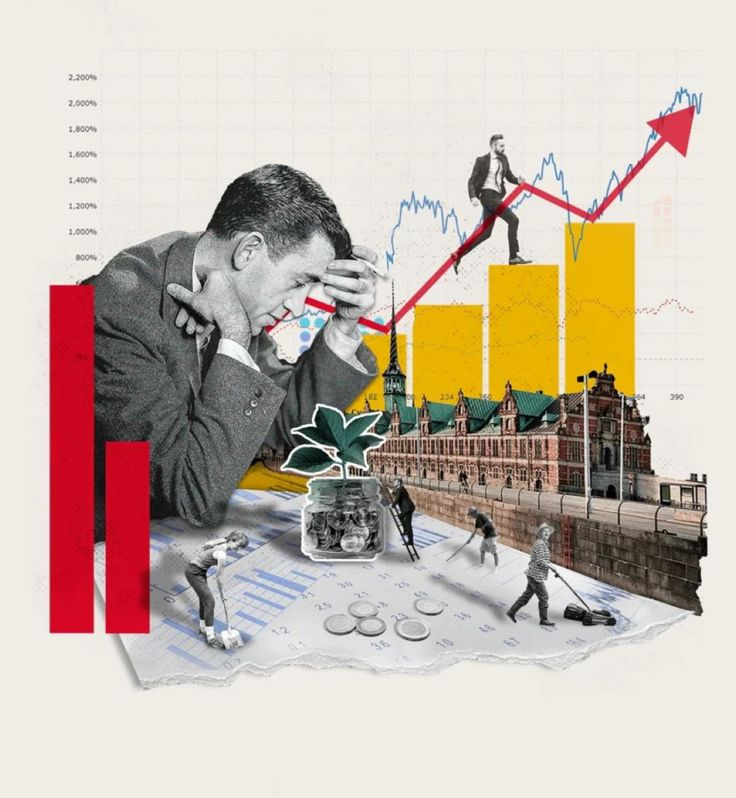

01
Desemprego Estrutural
Ocorre quando há uma mudança estrutural na sociedade. Os trabalhadores atingidos por esse tipo de desemprego não conseguem adequar-se à nova realidade do mercado de trabalho ou às novas demandas trabalhistas.
Nesta página ficam as pesquisas de Geografia ligadas ao tema do projeto: onde os empregos mudam, por que mudam e como isso afeta cada região.

Ocorre quando há uma mudança estrutural na sociedade. Os trabalhadores atingidos por esse tipo de desemprego não conseguem adequar-se à nova realidade do mercado de trabalho ou às novas demandas trabalhistas.
Provocado por crises econômicas, pandemias, epidemias ou desastres naturais
Acontece em determinadas épocas do ano. Muito comum em áreas agrícolas, que têm grande demanda durante o plantio e a colheita, mas, na maior parte do ano, a demanda de trabalho diminui-se, bem como o número de trabalhadores.
Aqui temos um tipo que atinge pessoas que podem estar à procura do primeiro emprego, que saíram do antigo emprego para buscar um melhor, ou que foram demitidas e ainda estão à procura, mas recebendo auxílios trabalhistas, como o seguro-desemprego.